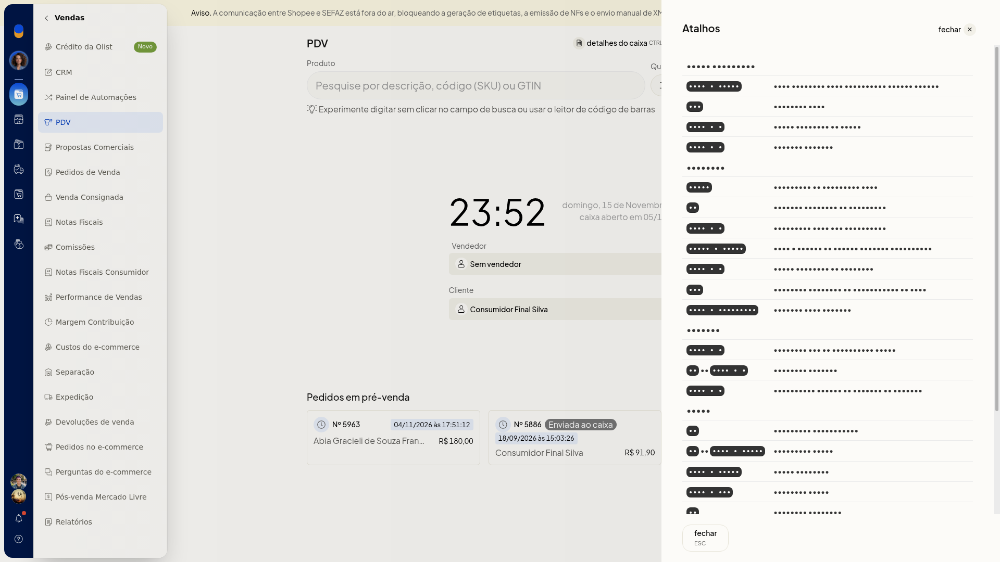

PDV: atalhos
No PDV da Olist, os atalhos de teclado levam direto às ações da venda, do preço e da finalização. Você consulta a lista completa sem precisar memorizar cada tecla e sem disparar a ação.
Instruções
-
Acesse Vendas > PDV.
-
Clique em Mais ações.

-
Clique em Mostrar atalhos (ctrl+?). O painel lista os atalhos de venda, caixa, preço e finalização, sem executar a ação.

Resultado
Você localiza os atalhos e pode usá-los na tela correspondente, sem concluir a venda.
Informações adicionais
Atalhos da tela inicial
- F8: informar o cliente
- F9: informar o vendedor
Atalhos da venda e do preço
- F10: salvar a venda para depois
- F7: enviar a venda ao caixa
- F3: devolver a venda ao vendedor
- CTRL+G: lista de preços
- CTRL+J: POS
- Shift+Enter: editar o último item
Atalhos da finalização
- ESC: voltar
- F4: adicionar recebimento
- CTRL+ENTER ou F2: finalizar
- CTRL+DEL: cancelar
- CTRL+L: CPF